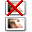
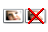
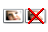
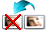
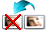
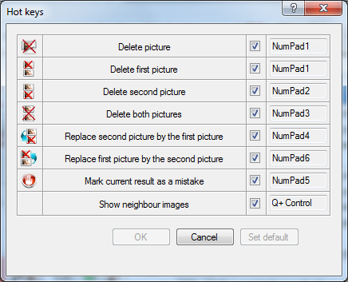

Hot Keys
Hot keys allow the user to speed up work with the buttons in the Preview Panel. Below is the complete list:
| Button | Description | Hot Key |
|---|---|---|
 or or
 |
Delete picture | NumPad1 |
 or
 |
Delete first picture | NumPad1 |
 or
 or
 |
Delete second picture | NumPad2 |
 or or
 |
Delete both pictures | NumPad3 |
or
 |
Replace second picture by the first picture | NumPad4 |
 or
 or
 |
Replace first picture by the second picture | NumPad6 |
 |
Mark current result as a mistake | NumPad5 |
| Show neighbour images | Q + Control |
If the user is not satisfied by the default values of hot keys, it can choose its own in the window Hot Keys:

You can open this window by clicking the item Results - Hotkeys in the Main Menu. In order to change the hot key, you need to click the mouse on the appropriate cell in the fourth column of the table, and then press the desired key or key combination (key + Cotrol, Shift or Alt). Then in the cell will display the new value of a hotkey. If the key is displayed in red, it means that this combination is already being used to another purposes. So in the program are reserved keys Up, Down, PageUp, PageDown, Home, End, Control+A, Control+C, Control-Z and Control-Y to navigate inside the table of results and to undo/redo user actions. In addition, the hot keys are located in one window should not overlap each other. If you remove the check mark in the third column of the table, it will lead to a ban on the use of hot keys for this operation.